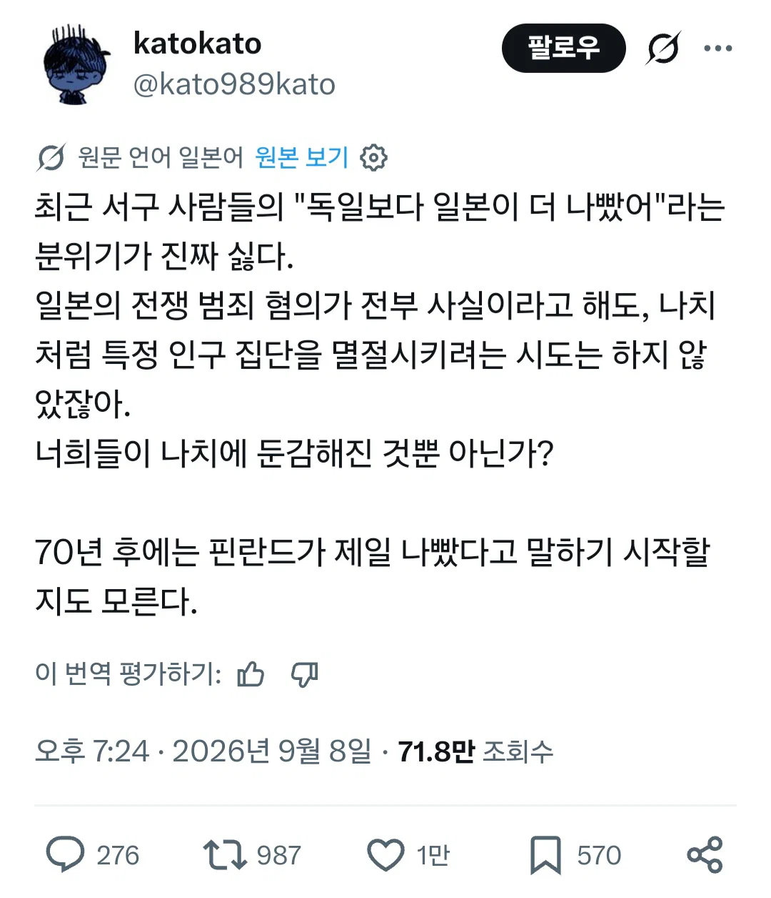
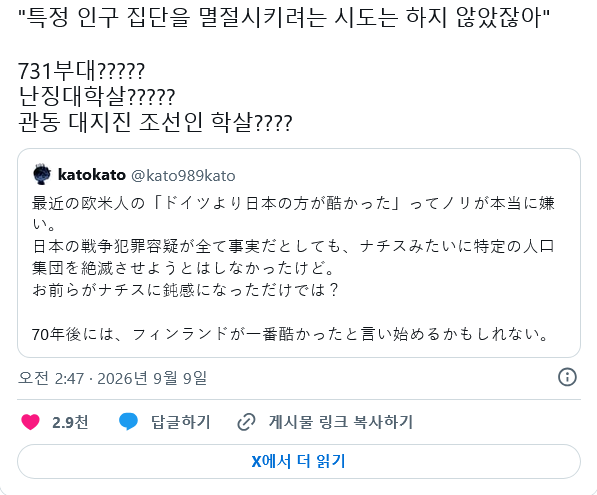

https://theqoo.net/square/4339877107


https://theqoo.net/square/4339877107


나치같은 인종멸절은 아니긴한데 그걸 구실로 이딴글 쓰는건 일본인이 아무것도 배우지 못했다는 역겨움이 올라옴
걍 같은급아님?
그 후손의 대처가 독일만 못한거지
한짓은 나치랑 동급이지 뭐 그 이상도 이하도 아닌듯
전쟁 막바지에 인명경시는 ㄹㅈㄷ긴 했음
독일은 그나마 반성하는 시늉이라도 하고 역사교육도 똑바로 시키지만
늬들은 과거 미화에 역사 교육도 제대로 안하잖아.
물타기할려고 비교하는 새끼들 다 죽여야해
뭐래 일제가 더 악질 맞음. 나치는 본질적으로 유대인에 편향된 공격성이었지만 일제는 그냥 아시아 전역에 만행을 저질렀고 일단 죽인 숫자부터가 일제가 몇배는 많음. 저지른 악행도 말할것도 없이 더 잔인하고.
역사교육 아직도 개판이네
일본은 절대로 역사 교육 제대로 할 수 없는 사회 풍조임. '와(和) 문화' 라고 타인과 조화와 화합을 중시 하는 것에서 시작되었지만 세월지 지날수록 굉장히 뒤틀려져 집단주의적 정신과 생활 양상이됨. 소속된 집단에 어울리지 않는 행동으로 조금이라도 미운털 박히면 바로 이지매 당하는데 일본 전통적으로 이 이지매에서 벗어나는 방법은 할복 밖에 없음. 그렇기 때문에 일본이라는 나라가 과거 주변국들한테 망나니였다는 사실은 일본이라는 국가 전체가 할복을 해야 마땅한 논리가 됨. 과거를 수용하고 용서를 구한다 이런건 얘네들 문화에 존재하지 않음. 그렇기 때문에 일본이라는 국가가 스스로 멸하지 않기 위해서 과거의 죄를 없던일로 하는게 제일 편함.
일본에서 자체적으로 '일제가 동북아 동남아 국가들의 국민들을 대상으로 대학살과 비인도적 인체실험 등을 웃으면서 자행했다'는 걸 가르치고 인정하게 하려면, 일본 역사 내에서 위대한 귀족 가문 출신에 현재 누구보다 유능하면서 똑똑하고 돈까지 많은 자수성가형 기업가이자 일본 일류대학 법대 출신의 정치가인 사람이 역사적 증거로 패야 함. 짧게 말하면, 일본에서 아무도 트집 잡을 수 없는, 현실에 존재할 리 없는 가장 완벽한 사람이 주장해야 함. 그래야 저치들은 굴종하고 따름. 잘못한 것을 인정하고 수정하는 게 아니라 그냥 강자에게 굴종하는 게 원칙임 저짝 동네는.
나치가 하던 인체실험 고대로 일제가 하던게 소름임.
얼음물에 담가두고 어떻게 죽나, 언제까지 버티나 확인. 혈액대신 바닷물 주입하면 안되나 인체실험. 바닷물만 쳐먹여서 언제죽나 인체실험, 고압실에 가두어 언제 머가리 터져죽나 인체실험, 방사선 불임 실험. 똑같은짓 함
제미나이피셜 일본이 나치보다 더 많이 죽였다
인종만 죽인게 아니라 인프라를 다 부수고 수탈하면서 나라를 박살내놔서 훨씬 많이 죽었다네
100인 참수 대결 ㅋㅋㅋ
지금의 일본에 죄를 물을 생각은 없는데 아니 이 쪽1바리 새끼들이 자꾸 지들도 피해자였단 식으로 구니까....
똥이 더럽냐 설사가 더럽냐급 논쟁 아님?
아시아인 입장에서 ㅈ본이 ㄹㅇ 개좆같지
이제야 아시아 존재감이 좀 생겨서 일본이 한짓이 부각되는 거지ㅋㅋㅋㅋ
일제는 특정 민족을 멸절시키려고 하진 않았지 그냥 유희용 사냥감이랑 실험쥐로 다뤘던 거 뿐이라고
나치가 뒤틀린 근대이성의 결과물이라면 일제는 걍 근대의 탈을 쓴 전근대국가였음 몽골이 약탈하고 저항하면 학살하던걸 20세기에 그대로 한거 ㅇㅇ 이 새끼들은 말이 서구화지 그냥 테크노바바리안이었음 ㅋㅋㅋ
원폭 두발 맞고 진짜 근대화에 성공한거 보면 일본은 미국에게 감사해야 하는거 아닐까??
독일은 자기죄를 뉘우치고있고 원종이색기들은 미화랑 숨기고있는게 너무다르지
평화 유전자 같은 개소리 나오는 거 보면 쟤네 역사교육은 뭔가 심각하게 잘못됨 ㅋㅋㅋㅋㅋㅋㅋ
우민화